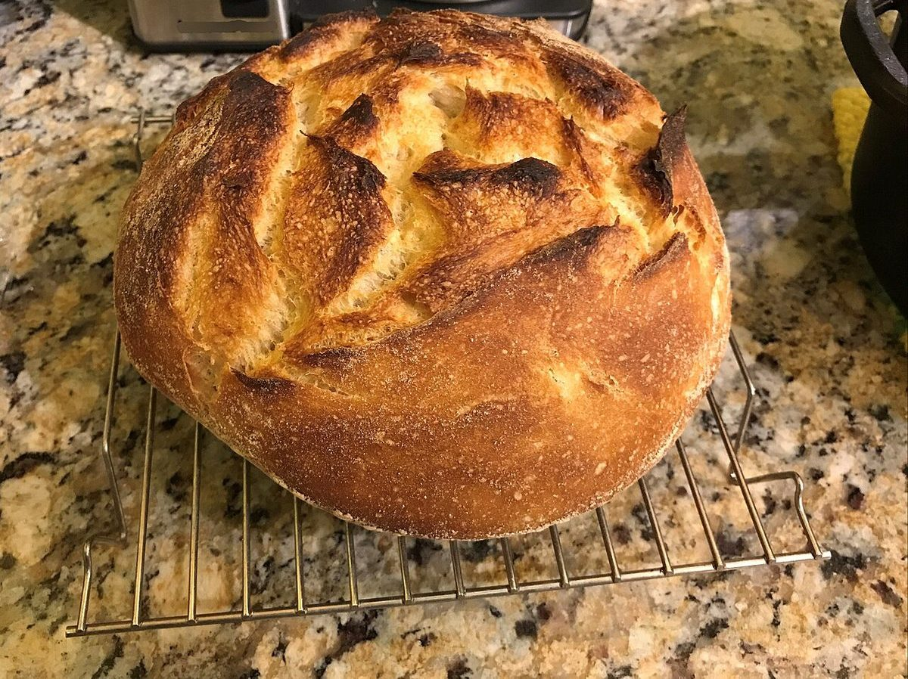

お店のこと
「龍華」の名前をつなぐ
パンの龍華は、新潟県十日町市川治にあるパン屋です。2022年に開店し、この場所にあった中華料理店「味の龍華」と同じ名前を受け継いでいます。
十日町駅から2kmほど、住宅街の中にあり、龍のイラストの看板が目印として紹介されています。
出典: 新潟日報 アッシュ記事(assh.niigata-nippo.co.jp/articles/9322/)。店主の想いや名前に込めた意味は確認できていないため、ここでは書いていません。

パン
並ぶパンのこと
記事では、次のようなパンが紹介されています。焼き目はパリッと、中はもっちり。持ち帰ったらオーブントースターで温め直すのがおすすめとのことです。



価格・販売日・営業時間: 準備中
写真はフリー素材のイメージで、お店の実際のパンではありません。


口コミ
お客様の声(イメージ例)
以下は制作側が作成したイメージ例で、実在のお客様の声ではありません。
イメージ例
朝からパンの香りがして、つい寄り道したくなるお店です。
ご近所にお住まいの方(想定)イメージ例
カレーパンがもっちりしていて、温め直しておいしくいただきました。
お子様連れの方(想定)イメージ例
龍の看板が目印で、初めてでも見つけやすかったです。
遠方から来られた方(想定)